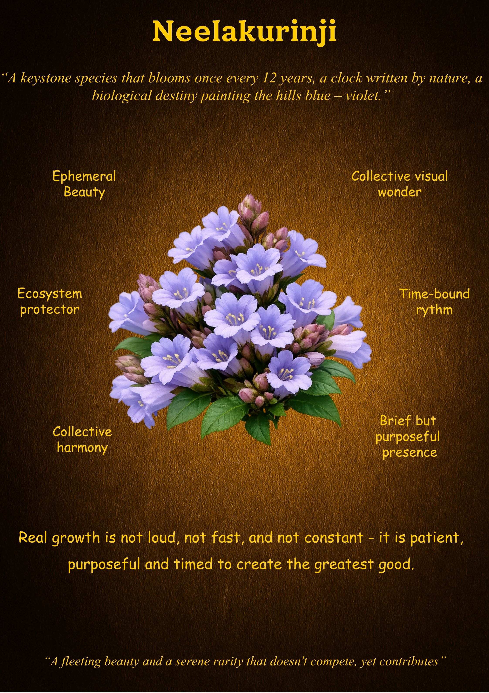

Neelakurinji
"A clock written by nature, a biological destiny painting the hills blue."
What is Unique
The Neelakurinji is a master of the long game. It is a keystone species that operates on a twelve-year cycle, a phenomenon known as mast seeding. For over a decade, it remains quiet, preparing its vital force until the time is exactly right to transform the Western Ghats into a sea of violet. It is a biological testament to the power of patience and the inevitability of destiny.
Overall Synthesis
This exhibit explores the "Rhythm of Contribution." Neelakurinji proves that excellence does not need to be constant to be impactful. By synchronizing its life cycle with thousands of others, it creates a collective wonder that sustains an entire ecosystem. It does not compete for space or attention every year; instead, it waits for the precise moment to offer its greatest good to the world.
Its Functioning Systems
Principles & Wisdom
The Neelakurinji challenges the modern obsession with constant "hustle" and daily visibility. Its wisdom teaches us that "Real growth is not loud, not fast, and not constant." True growth is patient, purposeful, and timed. By observing this bloom, we learn that a "serene rarity" that doesn't compete for daily attention can still be the most vital contributor to its world. We should not fear the quiet years; they are merely the preparation for our greatest contribution.